Etretat 2009

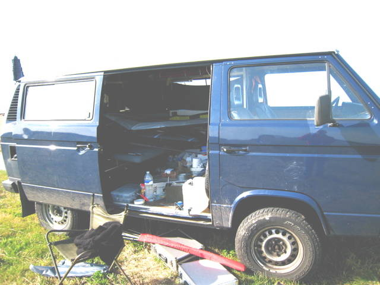
Cette année, c'est vraiment Etretat qui s'est mouillé pour l'organisation, agencée bien sûr par le CVC Dieppe. Le festival a lieu sur 3 sites : celui des monofils, celui de l'indoor du vendredi soir, et celui de la compétition de vitesse à Bénouville, déjà utilisé les années précédentes...

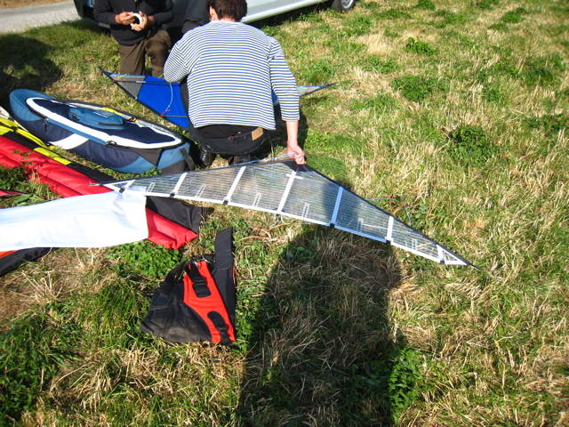
Les Allemands ont bien du mérite, certains ont fait 1250 km pour concourir... Les cerfs-volants utilisés sont presque plats et très rigides. Pas faciles à piloter à basse vitesse, ni surtout à décoller ! Et ils tirent d'enfer, surtout aujourd'hui avec des pointes de vent à 60 km/h !

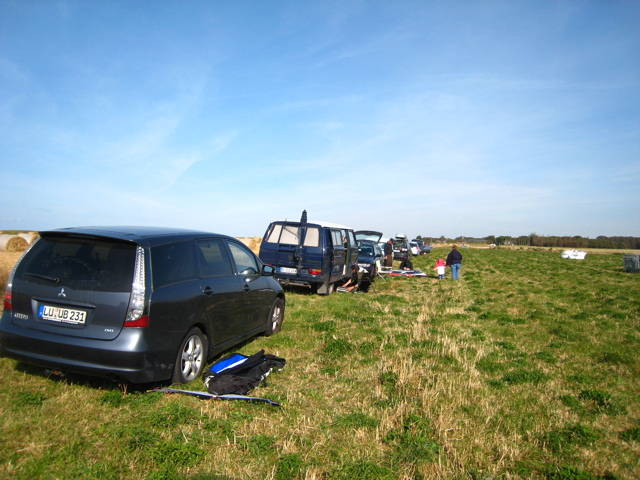
Ils ont dû faire la route ensemble et vendredi à 16 h, ils sont déjà là... Il y aura au moins un Français, Michel Vanesh pour son premier essai... et un autre concurrent avec un Révo rigidifié qui ne s'en tirera pas mal.

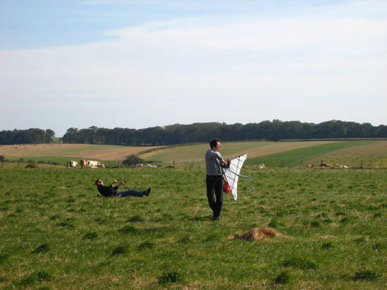
Ca tire tellement que certains se couchent par terre, avec un fond de culotte en cuir bien sanglé ! Le meilleur fera plus de 200 km/h ! Michel montera quand même à 128 pour sa première participation, c'est pas mal...

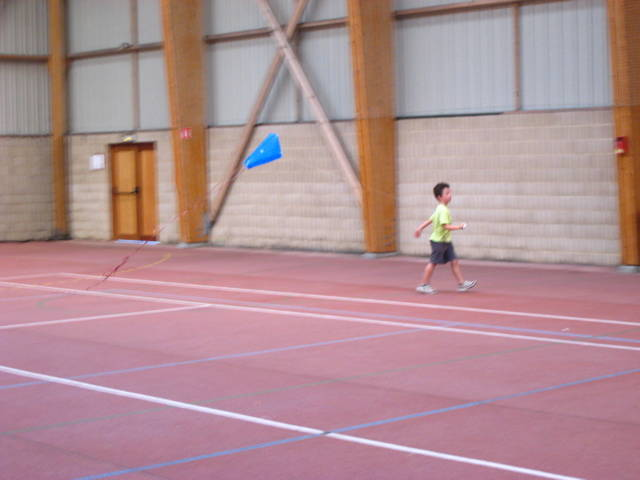
L'indoor a lieu dans un gymnase-tennis d'Etretat, au revêtement en gravillons durs ! Faudra pas tomber... Un gamin est déjà là avec un Sled léger, mais quand même pas très adapté !

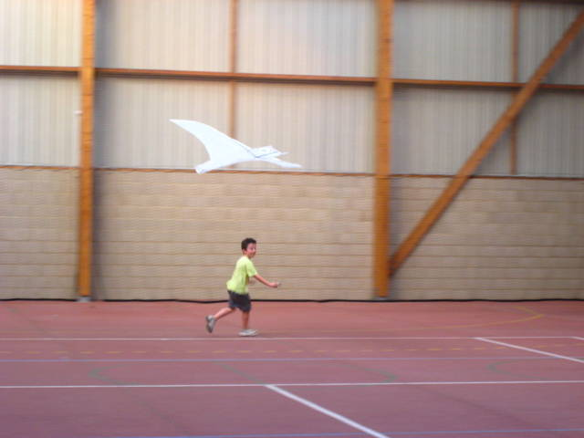
Je lui prêterai mon Harfang, on peut quand même moins se fatiguer, et même faire des zigzags et des huits !

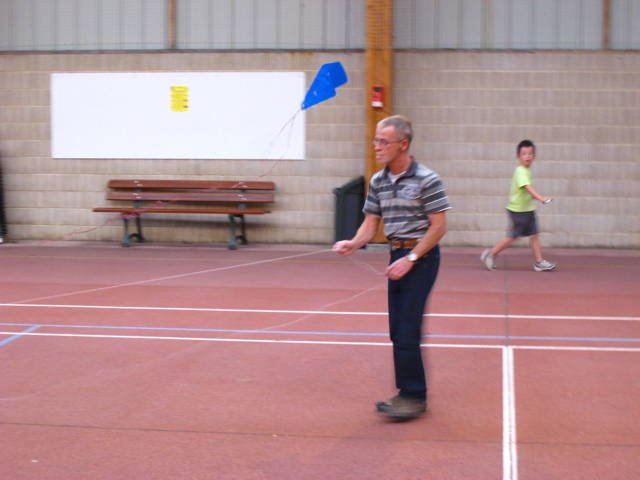
Entre 18 h et 20 h, nous ferons un peu d'entraînement, et un petit show : Michel, Fabrice au Révo, moi avec le Harfang et Manta qui revit grâce à Gaby, et Zézé !

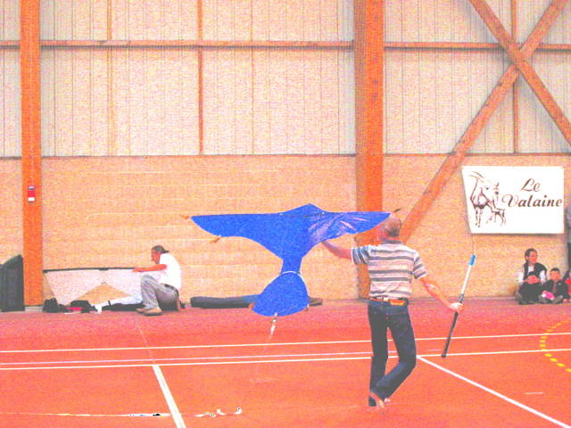
Michel présente son oiseau bleu à la canne, avec sa chorégraphie gestuelle habituelle ! Fabrice a du mal à faire glisser son révo sur le sol qui accroche. Mal préparé, je n'ai pas eu le temps de monter Mégoel, mais je sortirai in fine Bambou Bird pour un travail en finesse...

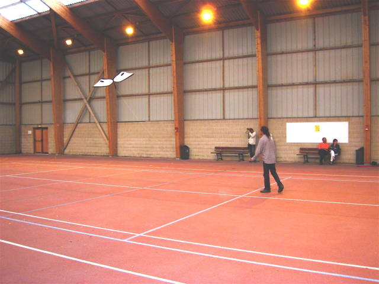
Zézé présente ses grands papillons qui se comportent idéalement en salle, montant au plafond sans problème et enchaînant des spires...

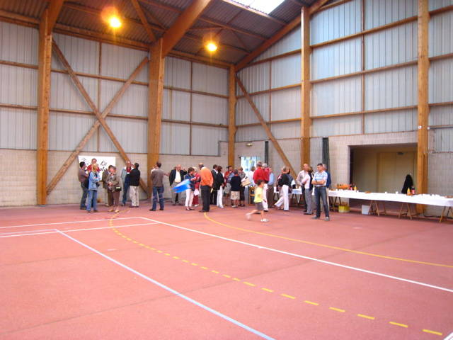
En fait, c'était l'inauguration officielle du festival. Un pot nous attendait, avec discours du maire qui était là, mais a attendu 3/4 d'heure l'arrivée d'Eric ! Il est gentil, il n'a pas râlé et a fait, debout sur une chaise et sans sono, un discours humoristique...

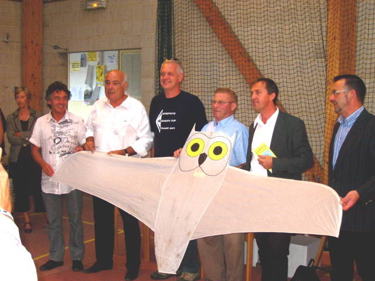
Pour finir, les organisateurs ont voulu faire la photo de groupe devant un cerf-volant. J'ai prêté mon Harfang qu'il faudrait bien que je lave pour cette haute dignité !

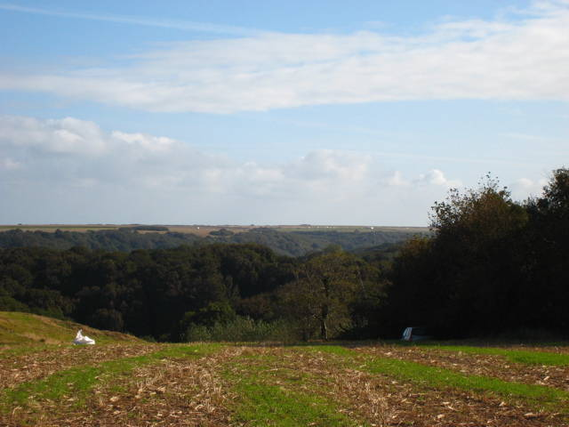
Pour les monofils et les pilotables, le terrain du Valaine (ferme de chèvres, à visiter) est très vaste et offre une splendide vue sur Etretat, dans le creux, et même sur le terrain de Bénouville, là-bas, au loin, sur le plateau de l'autre côté de la vallée... J'aurais bien été voir la coupe de vitesse, mais c'est bien loin, d'autant qu'il faut passer les feux rouges d'Etretat...

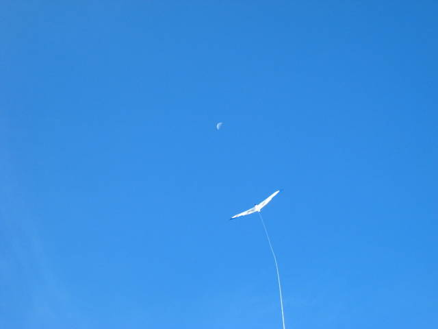
Le vent est très fort et turbulent. Je monte quand même mon Albatros 1 qui a l'air de vouloir aller dans la Lune...

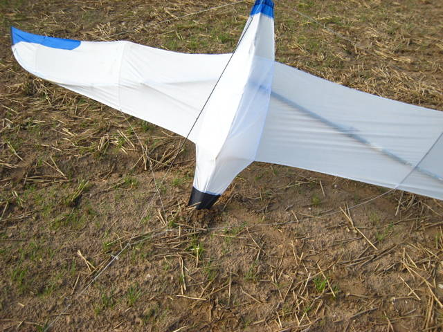
Mais dans les surventes et les turbulences, la pauvre bête fera quelques solides plantés-de-tête et je finis par la rentrer...

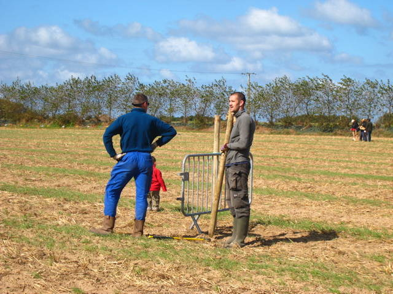
La Ferme de Volaine donne un coup de main et consolide les barrières pour éviter que la Rubalise prise par le vent ne les couche...

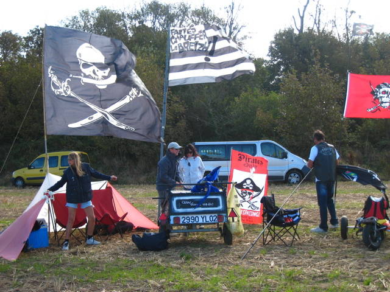
Les Pirates et les Gwenn-Ha-Du sont là et ont monté leur camp... A part William qui fait le poids, ils ne rouleront quand même pas beaucoup dans ce vent solide...

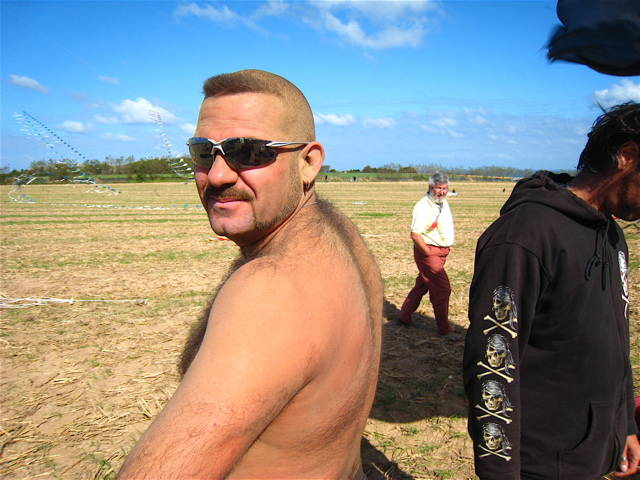
William, lui, roule par tous les temps et soulève une folle poussière... qui lui retombe sur la tête et le dos, tout jaunes !

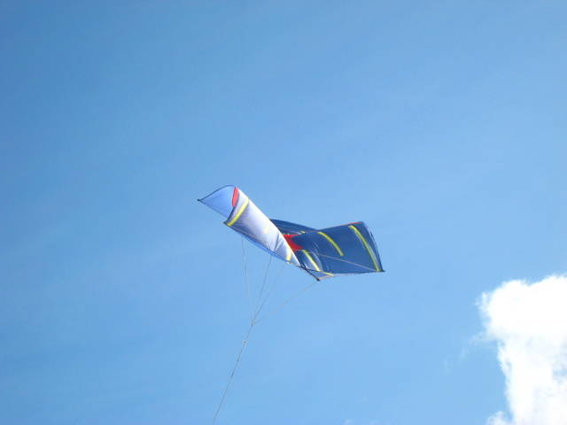
Le vent ne mollit pas, et je finis par mettre en l'air mon Rokkaku. Les ficelles sont détendues, mais le vent le courbe à sa guise ! Mais le réglage est pointu : très cabré pour la stabilité, et par 1/2 cm sur les brides latérales ! Il tombera quand même un peu sur des surventes qui le déforment trop...

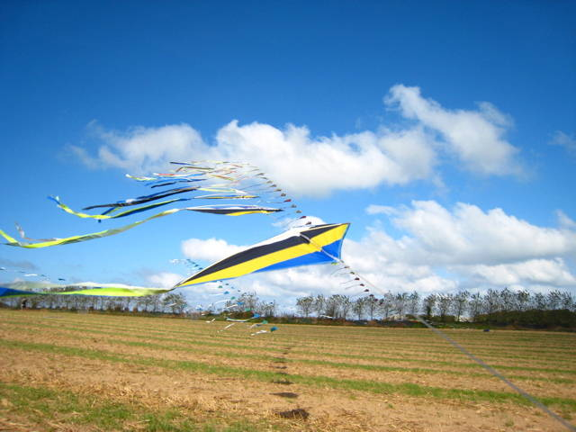
Gildas a sorti dès le matin ses grandes arches, bon choix pour éviter les soucis, même s'il perdra quelques queues et quelques baguettes !

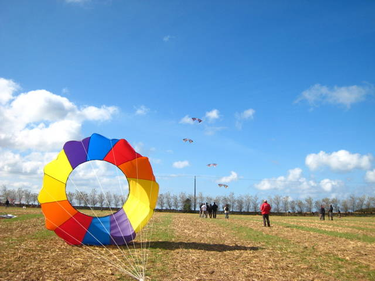
Patrick l'Higuinen déploie son bol tout neuf, ancré par 4 piquets à chien en tire-bouchon. Mais l'engin les tord et les sort de terre petit à petit, il faudra se mettre à 3 pour éviter la catastrophe et lui permettre de dégonfler le monstre de traction... Au fond, un team de Révos s'entraîne...

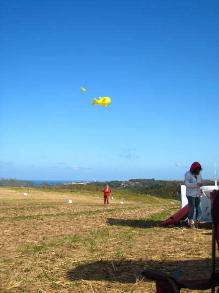
Gildas, une fois les arches plantées, a du temps libre, ça vole tout seul. Il sort son grand poisson, sans porteur mais tenu à la main ce qui permet de rattraper les quelques atterrissages involontaires...

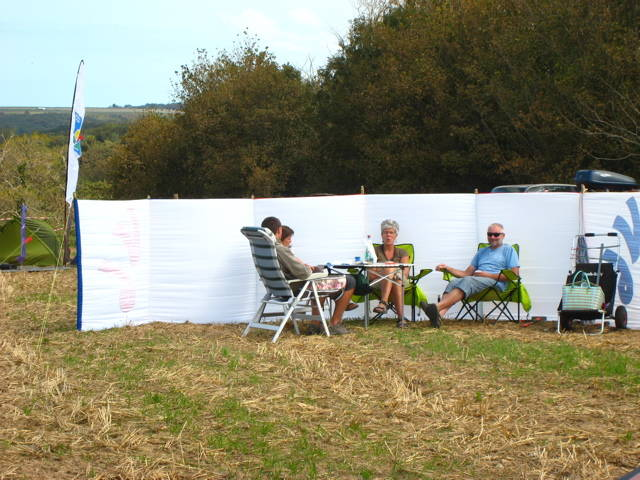
Mark Vercauteren a planté ses éoliennes, puis son immense mur anti-vent, bien adapté à la situation et qui permet le bronzage de toute la famille...

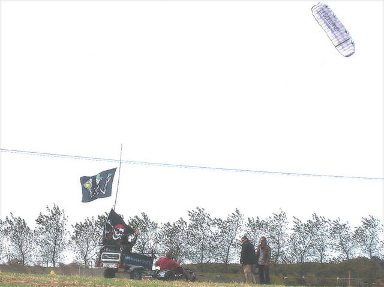
William fait des allers-retours en char avec sa remorque et des charges diverses, comme des enfants ou Jean-Michel qui essaie d'utiliser le drapeau Pirate comme voile supplémentaire !

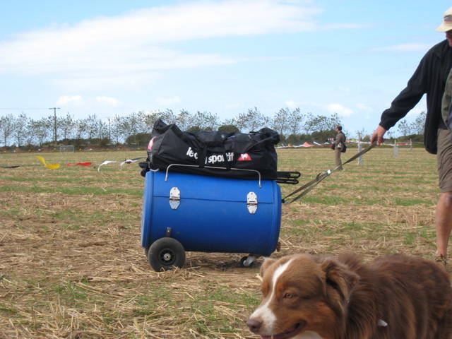
Thierry est arrivé de Fécamp, avec sa nouvelle remorque bidonnante qui remplace sa cantine à roues devenue trop petite... Il va encore mettre des roues plus conséquentes devant...

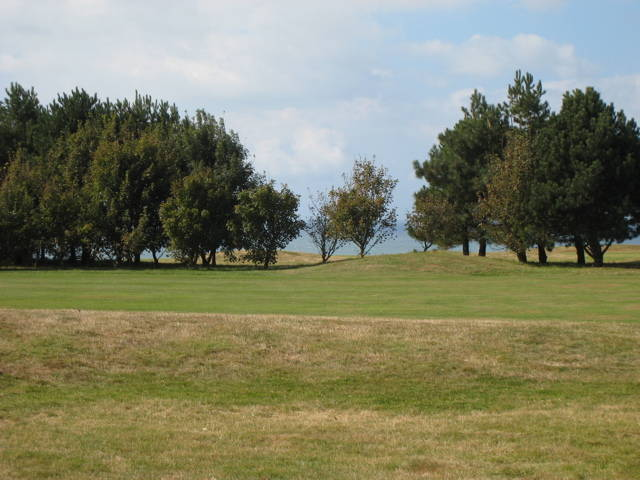
Bon, le Rokkaku a l'air de tenir, je pars faire le tour du golf qui borde la falaise...

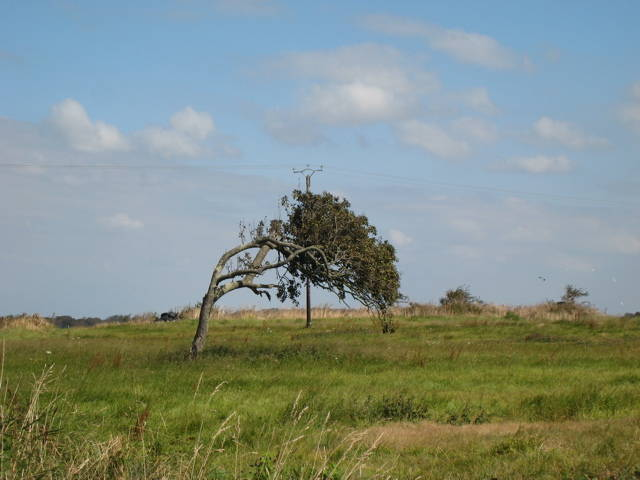
L'étape du Poirier Penché n'a pas eu à chercher son nom ! En fait, les pousses et les bourgeons qui s'essaient du côté de la mer sont trop ouverts au sel, et rien ne pousse sur cette face...

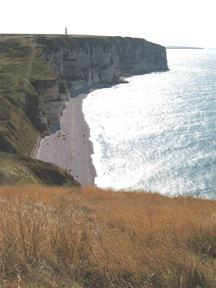
Tout à fait à gauche, la valleuse d'Antifer mène à la plage du même nom, dont le bout est fréquenté par les nudistes que vous pouvez admirer sur la photo !

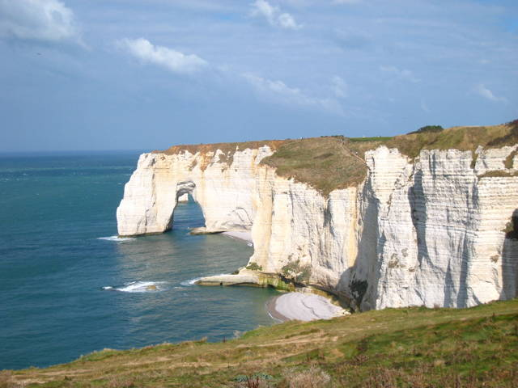
En revenant vers Etretat, la célèbre Manneporte, la plus massive des deux arches bien connues ! Et en bas, de petites plages, qu'il faut savoir quitter à temps...

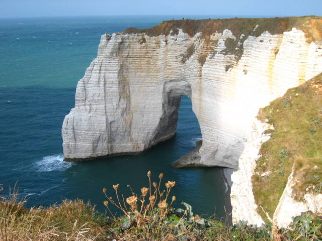
En approchant, on voit le courant qui la traverse !

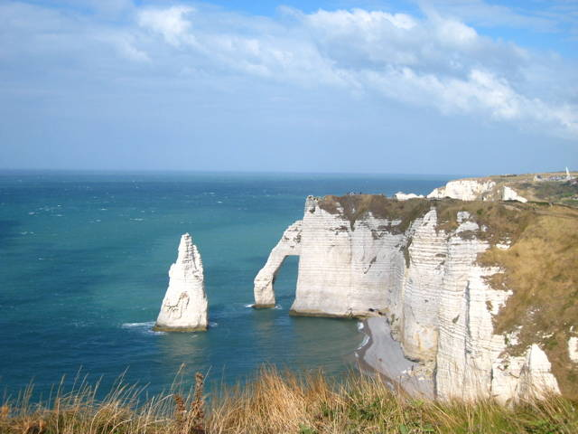
En continuant, la Porte d'Aval dont l'autre face est visible de la plage d'Etretat... Et bien sûr, l'Aiguille chère à Arsène Lupin...

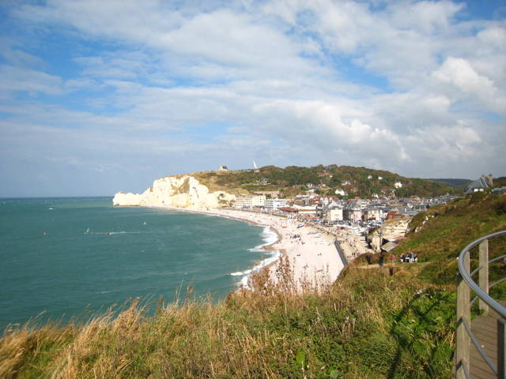
Et puis on arrive à Etretat, mais je triche un peu à travers le Club Golfique pour ne pas trop descendre...

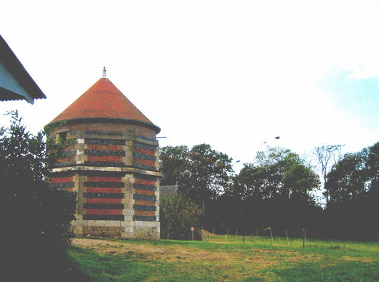
Le plus dur est de remonter jusqu'à la Ferme du Valaine, ses chèvres, ses fromages, ses Capr'Ices, ses chocolats... et son terrain de cerf-volant, tout là-haut...

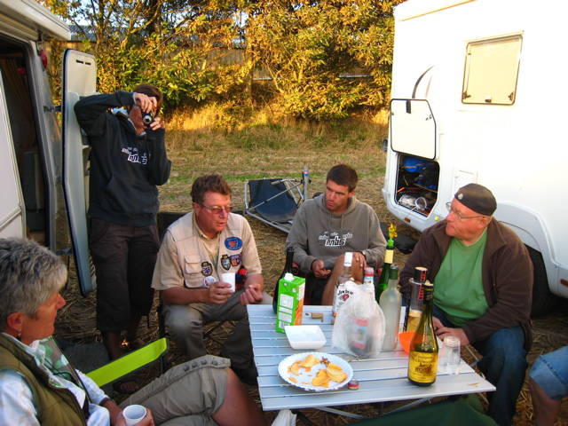
Au soir, petit pot chez les Belges et les Bretons, bien à l'abri du vent, en attendant le dîner qui sera servi dans le grand barnum et ses tables incorporées à la structure !

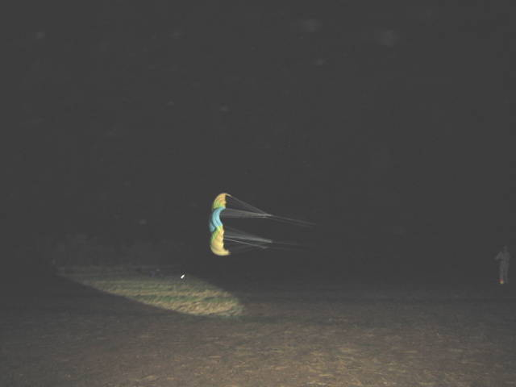
Le vol de nuit sera un peu limité, le vent restant toujours très fort ! Il y a quand même des projecteurs et une poursuite... Yves et William volent avec de relativement petites Nasas, on verra un team de 4 pilotables, et quelques monofils...

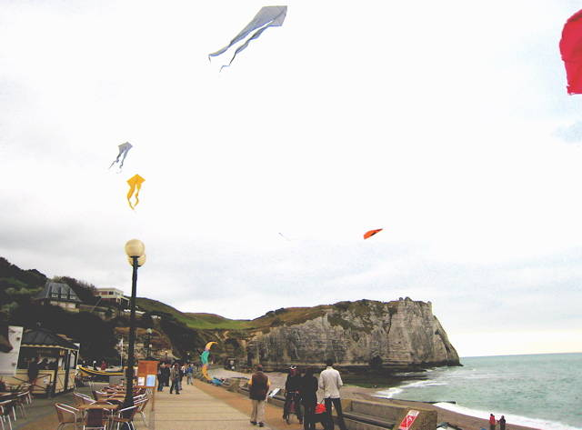
Dimanche matin, descente à la plage de 10 à 11 h, ce sera le meilleur moment du week-end : les vallées qui montent sur le plateau doivent faire entonnoir, mais ici, le vent est lisse, pas trop fort... et le public n'est pas loin ! Le ciel est blanc, cherchez l'Albatros qui s'y plait !

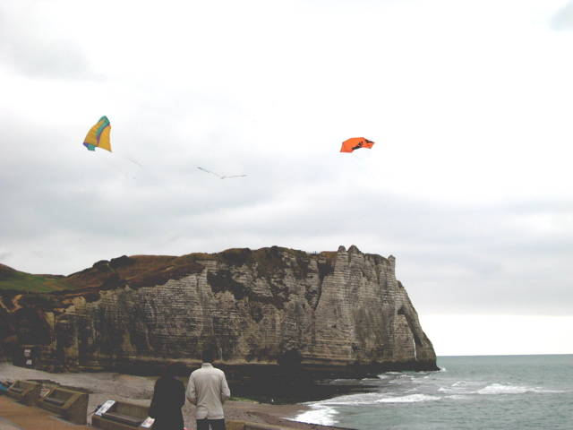
Bon, je m'approche un peu pour que vous voyiez bien... A travers l'Arche, on aperçoit la base de l'Aiguille... Si j'avais eu plus de temps, j'aurais monté l'Albatros dire bonjour aux promeneurs au haut de la falaise...

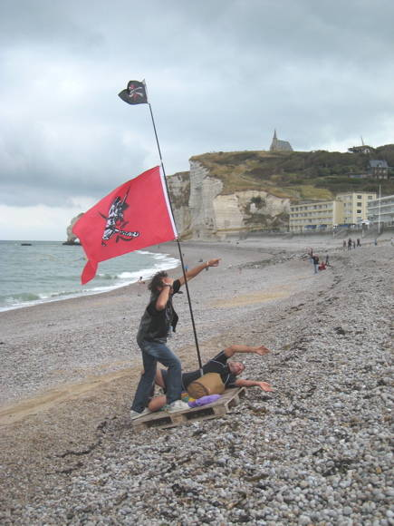
Chance pour le Radeau de la Méduse, il s'est échoué sur la plage ! Mais les malheureux, rendus fous par l'épreuve, ne s'en sont même pas aperçu...

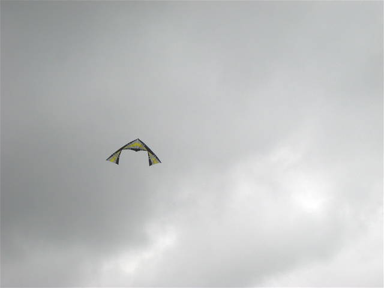
On remonte, des champions sont en train de s'entraîner sur Révos, dans des figures que je n'ai jamais vues !

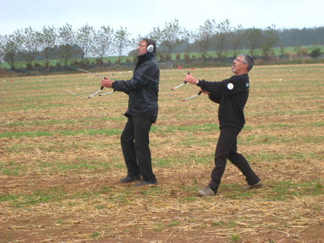
Bien sûr, ce ne sont pas n'importe qui...

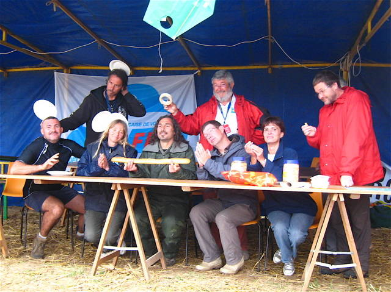
Mais le déjeuner approche. En plus des petites tables structurelles, de grandes tables de bois permettent de se préparer commodément...

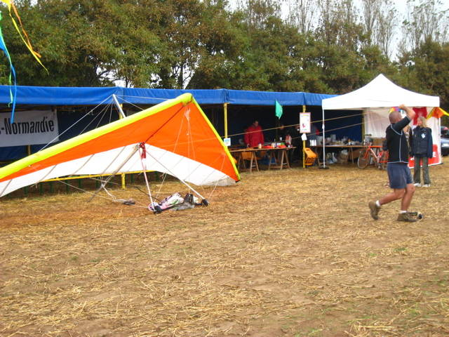
Un fana est venu exposer son Deltaplane, et William qui n'a rien à faire a bien envie de le décoller façon parapente...

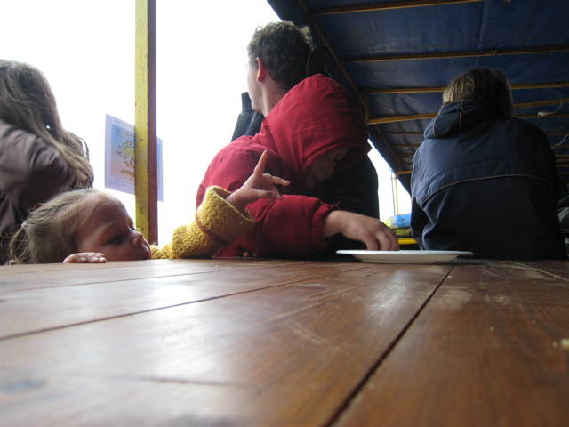
Fin de l'apéritif, les petits-enfants Lejosne marchent sur les traces des cervolistes adultes de la famille...

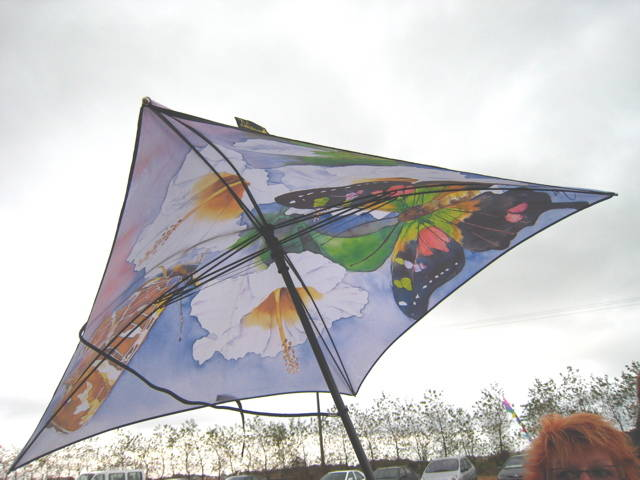
Il crachine un peu, Jacqueline (que vous reconnaissez bien, à droite...) arrive avec un très beau parapluie esthétique et technique avec son double baleinage...

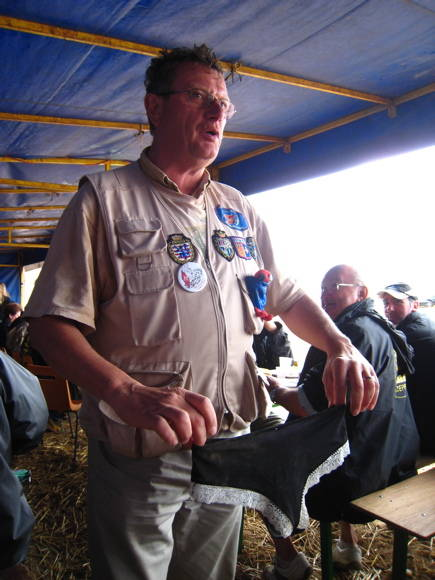
Déjeuner en commun, à l'abri sous le barnum ! Le Président du CVCF se voit offrir un accessoire qui n'est pas à sa taille, manifestement...

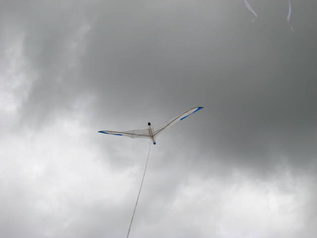
Dimanche après-midi, je remonte courageusement l'Albatros, je ne m'amuse pas avec un Rokkaku... Il souffre quand même beaucoup dans le vent qui le déforme et le torture, et il finira par casser une ficelle... Je réparerai à la maison...

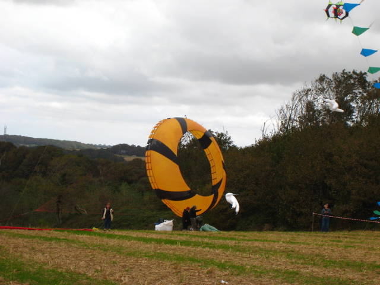
Au bas du terrain, un énorme bol se gonfle, incroyable dans ce vent. Ils ont dû réunir plusieurs ancrages... Le Revolver, en haut à droite tournera, lui, toute la journée sans avoir l'air de souffrir !

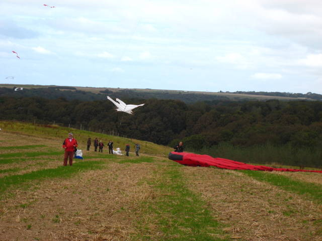
Daniel n'a pas amené ses Codys pour l'ascension humaine, bien qu'ils ne craignent pas le vent (Force 8 à ND de Monts !). Mais il fera voler son bel Arcturus qui a aussi une taille respectable...

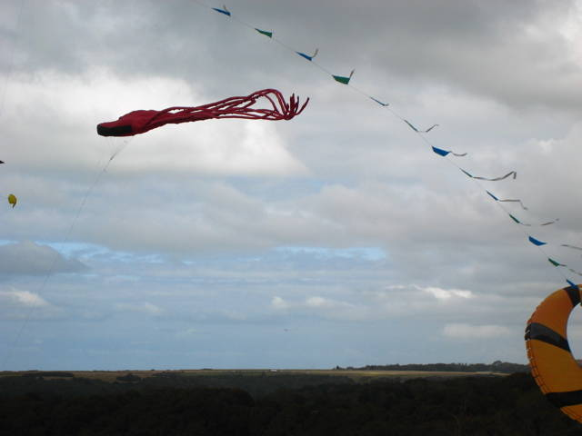
Ca y est, la pieuvre est en l'air, même si elle tortille ses tentacules désespérément...

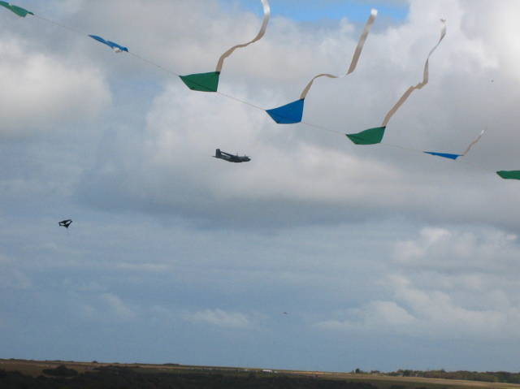
Avant la fin, un Transall vient nous faire un petit bonjour ! Mais je dois rentrer, mon ballon d'eau chaude se répand dans la cave et il faut que je m'y mette vite, vite ! Désolé de vous ennuyer avec des détails techniques, mais je dois partir, à la prochaine...
Etretat 2009 : Festival varié dans un très beau site, un peu difficile à gérer avec ses multiples terrains et un vent hors normes, puissant et turbulent ! Mais c'est un beau lancement pour les Arches du Vent, j'espère qu'ils continueront !